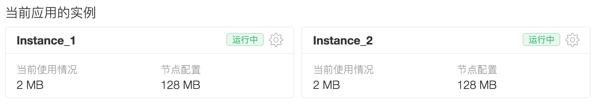

$ redis-benchmark -n 100000 -q
PING_INLINE: 69783.67 requests per second
PING_BULK: 68306.01 requests per second
SET: 68634.18 requests per second
GET: 67659.00 requests per second
INCR: 67294.75 requests per second
LPUSH: 61236.99 requests per second
LPOP: 62460.96 requests per second
SADD: 63451.78 requests per second
SPOP: 64724.92 requests per second
LPUSH (needed to benchmark LRANGE): 64808.82 requests per second
LRANGE_100 (first 100 elements): 62189.05 requests per second
LRANGE_300 (first 300 elements): 64267.35 requests per second
LRANGE_500 (first 450 elements): 66934.41 requests per second
LRANGE_600 (first 600 elements): 61462.82 requests per second
MSET (10 keys): 60096.15 requests per second
LeanCache 使用指南
LeanCache 使用 Redis （3.0.x）来提供高性能、高可用的 Key-Value 内存存储，主要用作缓存数据的存储，也可以用作持久化数据的存储。它非常适合用于以下场景：
下图为 LeanCache 和云引擎配合使用的架构：
恰当使用 LeanCache 不仅可以极大地提高应用的服务性能，还能降低成本，因为某些高频率的查询不需要走存储服务（存储服务按调用次数收费）。我们在 LeanCache Node.js Demos 这个仓库中包含了一些常见的使用场景的示例，可供大家参考。
主要特性
创建实例
进入
控制台 > 存储 > 云引擎 > LeanCache，点击 创建实例，如下图所示：创建实例时可设置的参数有：
volatile-lru，更多选择请参考 数据删除策略。数据删除策略
目前我们支持如下几种策略：
noevictionallkeys-lruvolatile-lruallkeys-randomvolatile-randomvolatile-ttl请注意，如果所有的 key 都不设置过期时间，那么
volatile-lru、volatile-random、volatile-ttl这三种策略会等同于noeviction（不删除）。更详细的内容请参考 Using Redis as an LRU cache。删除实例
进入
控制台 > 存储 > 云引擎 > LeanCache，在「当前应用的实例」下，点击每个实例右上角的齿轮图标（），在出现的窗口底部，点击「删除」按钮。删除「其他应用的可用实例」下的实例，有两种方式：点击每个实例的「隶属于」链接，切换到相应的应用下；或者从页面顶部的导航条，点击应用图标（） 来切换应用。然后再按上一段的提示，进行删除操作。
使用
LeanCache 目前支持通过云引擎访问。实例创建完毕后，云引擎应用就可以从环境变量中获取
REDIS_URL_<实例名称>的 Redis 连接字符串，通过该信息连接并使用 Redis。LeanCache 不提供外网直接访问。如果需要进行简单的数据操作或者查看状态，可以查看控制台：

或者使用命令行工具。
在命令行工具中使用
提示：命令行工具 在 v0.8.0 增加了 redis 命令来支持 LeanCache 的操作。
可以通过下列命令查询当前应用有哪些 LeanCache 实例：
可以通过下列命令创建一个交互式的 client：
在云引擎中使用（Node.js 环境）
首先添加相关依赖到云引擎应用中：
然后可以使用下列代码获取 Redis 连接：
在云引擎中使用（Python 环境）
首先添加相关依赖到云引擎应用的
requirements.txt中：然后可以使用下列代码获取 Redis 连接：
在云引擎中使用（旧版云引擎环境）
旧版云引擎环境不支持 LeanCache，建议升级到云引擎 3.0 Node.js 环境，升级文档详见 云引擎 2.0 升级 3.0 指南。
在本地调试依赖 LeanCache 的应用
目前不支持直接连接线上的 LeanCache 进行调试，所以需要先在本地安装好 Redis。
brew install redis来安装 Redis，然后使用redis-server启动服务。apt-get install redis-serveryum install redis默认情况下，在本地运行时程序没有 LeanCache 的环境变量，因此会使用本地的 Redis 服务器地址。
如果部署到预备或生产环境时遇到类似
redis err: Error: Redis connection to 127.0.0.1:6379 failed - connect ECONNREFUSED 127.0.0.1:6379错误，请核实以上代码中REDIS_URL_<实例名称>这个环境变量的值是否替换正确，也可参考 在云引擎中使用（Node.js 环境） 的示例。更详细的 Redis 操作说明请参考 Redis 官方文档。
多应用间共享使用
LeanCache 实例在开发者账户内全局可见，并不与某个应用固定绑定。所以在某个应用内创建的 LeanCache 实例，其他应用也一样可以使用，其调用方法和上述例子一样。
对于某些使用场景，譬如 O2O 行业的用户端和管理端，或者网络租约车平台的乘客端和司机端，需要多个应用共享同一个 LeanCache 数据，这一点将会非常有用。
性能
下面是使用 redis-benchmark 测试一个典型的容量为 2 GB 的 LeanCache 实例的性能表现：
可靠性
每个 LeanCache 实例使用 Redis Master-Slave 主从热备，其下的多个观察节点每隔 1 秒钟观察一次主节点的状态。如果「主节点」最后一次有效响应在 5 秒之前，则该观察节点认为主节点失效。如果超过总数一半的观察节点发现主节点失效，则自动将「从节点」切换为主节点，并会有新的从节点启动重新组成主从热备。这个过程对应用完全透明，不需要修改连接字符串或者重启，整个切换过程应用只有几秒钟会出现访问中断。
与此同时，从节点还会以 AOF 方式 将数据持久化存储到可靠的中央文件中，每秒刷新一次。如果很不巧主从节点同时失效，则马上会有新的 Redis 节点启动，并从 AOF 文件恢复，完成后即可再次提供服务，并且会有新的从节点与之构成主从热备。
极端情况下的数据丢失
当一个实例中的主节点失效，而最新的数据没有同步到对应的从节点时，主从切换会造成这部分数据丢失。
当主、从节点同时失效，未同步到从节点和从节点未刷新到磁盘 AOF 文件中的数据将会丢失。
在线扩容
你可以在线扩大（或者缩小） LeanCache 实例的最大内存容量。整个过程可能会持续一段时间，在此期间 LeanCache 会中断几秒钟进行切换，其他时间都正常提供服务。
多实例
有些时候，你可能希望在一个应用里创建多个 LeanCache 实例：
添加实例的方式请参考 创建实例。
价格
因为用户可能需要随时调整 LeanCache 实例的容量，所以为了方便计算，我们按照每个实例当天所使用的「最大容量」来结算，而不是「实际使用容量」。
不同容量的 LeanCache 实例的价格，请参考 官网报价。不同的节点使用不同的结算货币，价格会有差异，敬请留意。
费用计算
LeanCache 采取按天扣费，使用时间不足一天按一天收费，次日凌晨系统从账户余额中扣费。付费范围包括当前账户下隶属于每个应用的所有 LeanCache 实例，取每个实例当天使用的最大容量的价格，累计相加计算出总的使用费用。
如果在系统扣费之时，账户没有充足余额，那么在扣费当天的上午 10 点，账户内所有应用使用的全部实例会停止服务，但数据仍会保留，期限为 1 个月。
已停止服务的实例状态显示为 未运行。要恢复服务，需要向账户充值。在账户余额补足后的 5 分钟内，已停止服务的所有实例将会自动恢复运行。
删除无用实例
为了避免发生不必要的使用费，请及时删除不再使用的实例，步骤请参考 删除实例。
常见问题
与自建的 HashTable 相比较，LeanCache 有什么优势？
与自己在程序的全局作用域中维护一个 HashTable 相比，使用 LeanCache 的优势在于：
报错：Redis connection gone from end event
LeanCache 或者任何网络程序都有可能出现连接闪断的问题，可能是因为网络波动，或是服务器负载、容量调整等等。这时只需要重建连接即可使用。而 Redis Client 一般都有断开重连的机制，未连接期间指令会保存到队列，待连接成功后再发送队列中的指令（Redis client library 便是如此实现）。所以如果这个错误偶尔发生，一般不会有什么问题；同时建议在应用中 增加 Redis 的 on error 事件处理。
如果这个错误频繁出现，那么很可能 LeanCache 节点处于非受控状态，请联系 技术支持 进行处理。